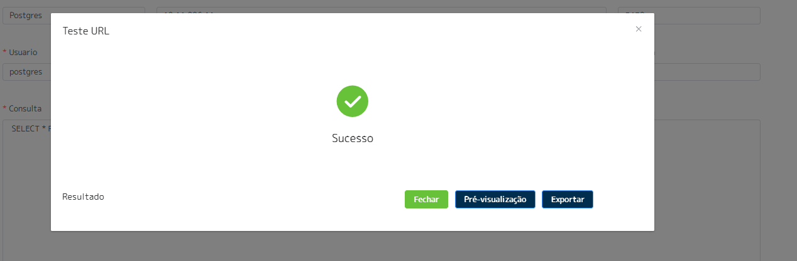
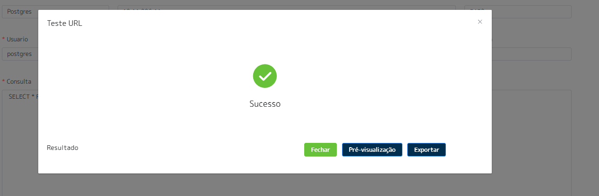

Bem-vindo à Documentação N4LINK
A plataforma N4LINK é um iPaaS (Integration Platform as a Service) que conecta sistemas legados e modernos de forma ágil, segura e escalável.
Sistemas já integrados


Acesso à Plataforma
Para acessar a plataforma N4LINK basta utilizar a URL: https://go.n4s-hip.com/signin, digitar seu e-mail e senha fornecidos pela nossa equipe:

Nossa plataforma exige o uso do MFA. No primeiro acesso, você será direcionado para a tela de leitura do QRCODE, onde poderá utilizar o aplicativo de sua preferência (Google Authenticator, Microsoft Authenticator, etc).

Após ler o QRCODE, clique no botão "Continuar" para ser direcionado à tela de preenchimento do código MFA:

Se tudo estiver correto, você será direcionado para a página inicial da plataforma:

Estrutura de Navegação
A nossa estrutura de navegação é baseada no menu que fica na lateral esquerda, onde cada opção define qual vai ser o tipo da tecnologia utilizada na requisição da origem, cadastro de serviços seria origem REST, cadastro de banco seria origem banco de dados, cadastro de SOAP seria origem SOAP, cadastro de arquivos seria origem leitura de um FTP/SFTP de qualquer tipo de arquivo (TXT, CSV, XML...), Cadastro de SAP-RFC seria para origem RFC's ou BAPI's específicas do mundo SAP.

SERVIÇOS EM EXECUÇÃO:
No menu Painel de Controle na opção Serviços em Execução, você terá acesso a todas filas ativas e cada conector em nossa plataforma possui sua fila própria. Ou seja, haverá uma fila para cada tema com opção de "PARAR" a fila, "REINICIAR", ou até mesmo "ELIMINAR" mensagens.
VALIDAR COMUNICAÇÃO:
Serve como um facilitador para que a plataforma teste via TELNET a comunicação com a URL fornecida.
EXTRATOR DE DADOS:
Ferramenta semelhante ao estúdio SQL. Aqui é possível rodar sintaxes em seu banco, caso seja o seu modelo e exportar para um excel ou até mesmo validar a sintaxe das consultas.
VARIÁVEIS GLOBAIS:
É uma forma de cadastrar conteúdos, seja para não deixar exposto no conector ou até mesmo facilitar construções utilizando essas variáveis sem precisar ficar repetindo conteúdos.
CENTRAL DE NOTIFICAÇÕES:
Cria alertas de maneira ativa, ou seja, a plataforma envia um e-mail de acordo com o que foi configurado. Exemplo: Você deseja criar um alerta para sempre que a resposta do destino voltar ERRO 500, seja enviado automaticamente um e-mail para a TI.
UPLOAD DE ARQUIVO:
Fazer uploads de arquivos csv, txt em uma tabela do N4LINK, com possibilidade de acessar os conteúdos pelos conectores. Exemplo: Para gerar as vendas do e-commerce para o ERP é obrigatório o cadastro específico, mas os dados não são transmitidos do e-commerce, mas com essa função, é possível criar uma regra a partir de um campo do e-commerce para uma planilha do Excel e determinar o conteúdo correto para enviar para o ERP.

Serviços Em Execução
Aqui conforme relatado anteriormente, são as filas ativas em nossa plataforma, onde é mostrado o ID do conector após o hífen na coluna FILA:
Nesta opção, é possível verificar as filas ativas na plataforma N4LINK, onde é mostrado o ID do conector após o hífen na coluna FILA.
COLUNA FILA:
É exibido o seu código de empresa na
plataforma N4LINK + ID do conector.
COLUNA EMPRESA:
É exibido o nome de empresa
cadastrado.
COLUNA STATUS:
Indica a situação atual da fila:
- VERDE indica que está em execução;
- AMARELO indica que está em processo de parar/reiniciar;
- VERMELHO indica que está parada.
COLUNA AÇÕES:
- BOTÃO DELETE - elimina as mensagens da fila, na sequência já para a fila e sobe ela novamente
- BOTÃO PURGE - elimina as mensagens atuais da fila
- Botão vermelho (-) é o botão que para a fila
- Botão de RESTART - azul com duas setas, uma de encontro a outra - serve para parar e subir novamente a fila
- Botão PLAY - verde - inicia a fila que está parada
Validar Comunicação
Nesta tela você consegue validar se o endereço de origem (N4LINK) que pode ser testado como localhost, ou se for um endereço mais específico você pode falar com o nosso suporte para saber em específico qual é o endereço LAN da máquina que os seus conectores estão rodando, possui comunicação com um outro endereço e porta, ou seja, é executado um TELNET para demonstrar se a comunicação está funcional, Exemplo comunicação com o Google:
Extrator de Dados
Configure seu acesso com um banco na qual nossa plataforma possui conexão e execute consultas SQL ou até mesmo, procedures para verificar se a sintaxe está funcional. Ainda é possível extrair o resultado apresentado para uma planilha do Excel. Na opção de DRIVER, selecione qual é o banco de dados. . Em URL existe o IP/Endereço que o banco está sendo executado; . PORTA - qual a porta em que se encontra o banco de dados; . USUÁRIO - faça o login que tem acesso ao banco; . SENHA - insira a senha do login utilizado; . BANCO - insira o nome do banco de dados a ser lido; . SCHEMA - insira o schema, se for o caso. Exemplo:
 

Variáveis Globais
Painel onde somente os perfis configuradados como ADMINSITRADOR possuem acesso, ou seja, você pode criar varíaveis que contém dados para autenticação como exemplo e compartilhar com quem for criar os conectores somente os nomes das varíaveis, blindando assim, o conteúdo. Esse processo contribui muita para a produtividade, pois não é necessário repetir conteúdos em suas criaçãos de Conectores. Tela que apresenta sua empresa e quantas varíaveis criadas você possui:

Novo cadastro de varíavel:

Central de Notificações
Central para configuração de aletas de maneira ativa via e-mail. É possível criar regras especifícas para quando a condição for válida e disparar um e-mail para o responsável pela análise do erro. Tela inicial que apresenta sua empresa e quantos alertas você possui cadastrados:

Tela para criação de um novo alerta:

Exemplo de criação da estrutura do e-mail, onde o conteúdo '{{destiny}}' é uma variavel global da plataforma N4LINK que armazena toda a resposta do destino.

Upload de Arquivos
Nesta interface, é possível subir arquivos para utilizar o conteúdos nos seus conectores, seja para enriquecer ou validar um dado. Isto é, ter dados na plataforma onde nenhuma das pontas integradas conseguiria informar. Tela que apresenta quantos arquivos você subiu para sua empresa:

Tela para configuração de upload de um novo arquivo. Selecione o tipo (no exemplo abaixo: CSV); Qual o delimitador de conteúdos (no exemplo: ponto e vírgula (;)); Selecione o arquivo que quer fazer upload (no exemplo: convert.csv); Salve para confirmar o upload.

Integração via REST
Para a configuração de integrações com origem REST, menu Integrações - Cadastro de serviços você terá como tela inicial:
Para os conectores já criados, você visualizará: . Botões de LOG responsáveis por armazenar todos os dados de uma transação executada; . Botão VIEW - apresenta dados que foram armazenados em um tabela intermediária, conceito utilizado quando normalmente no sistema de origem não é possível controlar o que ja foi integrado para ser reenviado ou não; . Botão LAYOUT - armazena toda a configuração do conector; . Botão CONTROLE DE VERSÕES - botão cinza ao do lado botão LAYOUT; . Botão de CÓPIA - é um facilitador. Neste item, é possível reaproveitar configurações de um conector já produzido; . Botão PLAY - é utilizado para disparar a integração de maneira imediata. Na configuração do conector, seja um novo ou alteração de um existente, o preenchimento do formulário REST é semelhante às ferramentas de uso para teste de API's de mercado. Um exemplo prático é o POSTMAN , é selecionado se deve ser verificado o certificado do endereço a ser conumido ou não, o VERBO a ser utilizado, URL, Endpoint. Caso seja uma uma API paginada, qual o conceito de paginação; caso tenha autorização, qual o tipo utilizado, e os dados do HEADER, que é dinâmico e pode ser inserido quantos forem necessário pelo botão de adicionar (+).
Integração via SOAP
Para a configuração de integrações com origem SOAP, menu Integrações - Cadastro de SOAP , aparecerá como tela inicial:
Para os conectores já criados você visualizará: . Botões de LOG - responsáveis por armazenar todos os dados de uma transação executada; . Botão VIEW - apresenta dados que foram armazenados em um tabela intermediária, conceito utilizado quando normalmente no sistema de origem não é possível controlar o que ja foi integrado para ser reenviado ou não; . Botão LAYOUT - armazena toda a configuração do conector. . Botão CONTROLE DE VERSÕES - botão cinza ao do lado botão LAYOUT; . Botão de CÓPIA - é um facilitador. Neste item, é possível reaproveitar configurações de um conector já produzido; . Botão PLAY - é utilizado para disparar a integração de maneira imediata. Na configuração do conector, seja um novo ou alteração de um existente, o preenchimento do formulário SOAP é bem semelhante à ferramentas de uso para teste de API's de mercado. Por exemplo o SOAPUI, é selecionado o que deve ser verificado, o certificado do endereço a ser conumido ou não, insere o WSDL que contém os métodos. Caso seja uma API paginada, qual o conceito de paginação, se existir autorização qual o tipo utilizado, e os dados do HEADER, que é dinâmico e pode ser inserido quantos forem necessário pelo botão de adicionar (+).


Integração via Arquivos
Para a configuração de integrações com origem FTP/SFTP para leitura de arquivos, menu Integrações - Cadastro de banco você tera como tela inicial:
onde para o conectores ja criados você encontra os botões de LOG responsável por armazenar todos os dados de uma transação executada, botão LAYOUT que armazena toda a configuração do conector, botão CONTROLE DE VERSÕES que seria o botão cinza ao do lado botão layout, botão de CÓPIA que é um facilitador caso tenha como reaproveitar as coisas de um conector ja feito e o botão PLAY que é utilizado para disparar a integração de maneira imediata. Na configuração do conector seja um novo ou alteração de um existente, o preenchimento do formulário para conectar e coletar dados no banco é bem parecido com ferramentas de uso para conexões em FTP/SFTP, você coloca na URL o ENDEREÇO:PORTA e na frente quebrando por barras se for o caso a navegação entre as pastas, no Exemplo abaixo após logar e estar na raiz do FTP eu estou indicando para ir até a pasta TESTE. Fora a parte da conexão você define como vai ser a quebra dos arquivos da pasta selecionada, no caso do nosso teste são todos arquivos CSV quebrados por ponto e vírgula (;). Ainda temos nesse setor um condicional para ignorar as linhas do arquivo, seja para pular o cabeçalho do arquivo por Exemplo ou até mesmo descartas linhas baseado em regras, no Exemplo abaixo estamos descartando tudo que na primeira coluna do arquivo tiver o texto ORIGEM ou DATA.

Ja para a seção de conversão de paramêtros temos a trativa do dado em si, onde indicamos qual é a coluna de origem e qual o nome do atributo que a API REST de destino vai receber, esse de-para pode ser do tipo Função onde é habilitado um livro para inserção de funções em javascript, um dado fixado seja de tipo TEXTO, NUMERO ou LÓGICO, ou dinâmico onde é pegado exatamente o conteúdo da origem e enviado para o destino no atributo configurado, então no Exemplo abaixo temos a coluna 14 indo para o atributo taxIdTo no destino, ja para a coluna 7 que vai para o atributo amount temos uma função em javascript devido a ser uma trativa mais complexa do dado, transformar corretamente as unidades de milhar, dezena... Depois transformar no tipo FLOAT.
Integração via Banco de Dados
Para a configuração de integrações com origem BANCO DE DADOS, menu Integrações - Cadastro de banco você tera como tela inicial:

onde para o conectores ja criados você encontra os botões de LOG responsável por armazenar todos os dados de uma transação executada, botão LAYOUT que armazena toda a configuração do conector, botão CONTROLE DE VERSÕES que seria o botão cinza ao do lado botão layout, botão de CÓPIA que é um facilitador caso tenha como reaproveitar as coisas de um conector ja feito e o botão PLAY que é utilizado para disparar a integração de maneira imediata. Na configuração do conector seja um novo ou alteração de um existente, o preenchimento do formulário para conectar e coletar dados no banco é bem parecido com ferramentas de uso para conexões via JDBC de mercado, como por Exemplo o DBEAVER, você seleciona qual é o banco que vai utilizar no Exemplo abaixo SQL SERVER, URL, porta, usuário e senha, e o SCHEMA somente se for necessário, no camp QUERY você insere sua sintaxe seja uma consulta, uma procedure, no Exemplo abaixo estou montando um SELECT

Integração via SAP RFC/BAPI
Para a configuração de integrações com origem SAP ECC, menu Integrações - Cadastro de SAP-RFC você tera como tela inicial:

onde para o conectores ja criados você encontra os botões de LOG responsável por armazenar todos os dados de uma transação executada, botão LAYOUT que armazena toda a configuração do conector, botão CONTROLE DE VERSÕES que seria o botão cinza ao do lado botão layout, botão de CÓPIA que é um facilitador caso tenha como reaproveitar as coisas de um conector ja feito e o botão PLAY que é utilizado para disparar a integração de maneira imediata. Na configuração do conector seja um novo ou alteração de um existente, o preenchimento do formulário para conectar é bem parecido com o preenchimento dos dados no SAP LOGON GUI, onde você preenche o servidor de aplicação, se for SAP-ROUTER a URL do router, usuário, senha ID do sistema, número da instancia, client e linguagem. Após os dados de conexão você informa qual é a RFC ou BAPI a ser consumida, no Exemplo abaixo é uma RFC customizada chamada CADASTRO_MATERIAIS, nos parêmtros de entrada você informa os parametros que a RFC/BAPI espera, no Exemplo abaixo temos os parametros data de (IM_LAEDA_DE) e o data até (IM_LAEDA_ATE)

DE-PARA de Atributos Destino REST
Sempre que o Destino for REST, independente da tecnologia da origem (BANCO, SOAP, ARQUIVO, SAP RFC/BAPI), vai existir na página o conversor de paramêtros. Na primeira coluna é possível configurar determinados atributos para popular a tabela intermediária da plataforma e fazer o descarte caso retorne. Na segunda coluna é pontuado o tipo do DE-PARA. Pode ser: . DINÂMICO - modelo que utiliza o conteúdo da origem e o envia para o destino. No exemplo está sendo utilizado o conteúdo do atributo MATNR que está chegando e enviando para o atributo CODE no destino. . FIXO - pode ser um texto, um número ou lógico. O exemplo está fixando o conteúdo TRUE como dado lógico para mandar no atributo is_integration, até mesmo uma função. Veja no exemplo o atributo IS_ACTIVE ue habilita um livro acima para que possa ser cirado sua função em javascript.

Quando é utilizado o conceito de função ao entrar no editor (botão do livro) é exibido uma tela para criar a função. Nesta tela é possível utilizar variáveis globais da plataforma para captar conteúdos: . Varíavel record - armazena os dados que voltaram da requisição do fomrulário origem; . Detail - armazena o conteúdo da requisição do formulário detalhe; . Parent - armazena o conteúdo que chega do conector PAI; . Caso esse conceito seja utilizado, uploadedFiles armazena arquivos em csv que foram subidos para a empresa. exemplo abaixo é feito um if simples onde caso exista na origem o atributo LVORM, será retornado. Caso contrário, fixamos o retorno TRUE.

Estrutura de Body Destino Banco
Quando o destino é banco é possível utilizar o conceito de duas chaves: abrindo e fechando informando o nome de atributo que chegou na origem a ser utilizado. A partir dai, é possível estruturar sua procedure de maneira completa (INSERT, SELECT, UPDATE, etc) e onde desejar trocar os conteúdos de acordo com os atributos que chegam na origem. No exemplo abaixo estamos chamando uma procedure BDIPIERPROD onde no parâmetro CodBarras está sendo utilizado o conteúdo do atributo CODBARRAS que chega da origem REST.

Estrutura de Body Destino SOAP
Quando o destino é SOAP é possível utilizar o conceito de duas chaves: abrindo e fechando informando o nome de atributo que chegou na origem a ser utilizado. No exemplo abaixo há o {{codigoCfo}} ou também, é possível utilizar o conceito de dois colchetes, no qual o conteúdo entre eles é uma sintaxe em javascript. Exemplo: tag NOMEFANTASIA está retornando o que chega da requisição da origem (variável record) pegando o atributo firstName que está dentro do objeto clientProfileData.

Estrutura de Body Destino RFC
Quando o destino é banco é possível utilizar o conceito de duas chaves: abrindo e fechando informando o nome de atributo que chegou na origem a ser utilizado. A partir dai, é possível estruturar sua procedure de maneira completa (INSERT, SELECT, UPDATE, etc) e onde desejar trocar os conteúdos de acordo com os atributos que chegam na origem. No exemplo abaixo estamos chamando uma procedure BDIPIERPROD onde no parâmetro CodBarras está sendo utilizado o conteúdo do atributo CODBARRAS que chega da origem REST.
Configuração de Agendamento
Para agendamento, há as opções de recorrência, divididos por hora, minuto ou segundos:
Execução diária - é informado um horário para execução:

Agendamento semanal - pontua um ou mais dias da semana e qual horário executar:

Agendamento mensal - informa apenas um dia do mês para execução e qual o horário:

Agendamento do tipo FAIXA - informa um range de horas do dia para a execução e de quanto em quanto tempo. No exemplo abaixo foi configurado para rodar da meia noite até ´às seis da manhã, com um disparo a cada 30 minutos.
API Ouvinte (Webhook)
É possível configurar o conector para ser recpetivo, no qual, no cabeçalho é possível informar que é um conector ouvinte e configurar um nome de método a ser extarnalizado. A URL e o token são únicos para cada cliente e são informados pela nossa equipe no momento da criação do cadastro da Empresa para liberação de uso na plataforma.

No exemplo abaixo a empresa N4LINK possui a URL: https://go.n4s-hip.com/public/23/ como base. Após a última barra virá o método que será configurado como ouvinte. Exemplo: Foi criado o conector abaixo expondo o método /meuWebhook onde a platafoma está externalizando um verbo POST que irá receber um body de alguém que estiver requisitando-a. A partir do recebimento desse body é possível dar sequência em outras atividades no mesmo modelo quando é a plataforma que está requisitando. Exemplo de URL e TOKEN disponibilizado por nossa equipe:
Conceito Conector Pai
Existe a possibilidade de encadear conectores para enriquecimento de dados ou até mesmo por questão de sequência lógica. Exemplo: Sua empresa está integrando pedidos de um ecommerce. Obrigatoriamente, antes de descer o pedido é necessário cadastrar o cliente. Aqui, poderia ser configurado para o conector de pedidos chamar o conector de clientes primeiramente e só após esse processo, o cliente ser integrado para descer o pedido de venda. É possível informar ao conector pai, qual é o tipo de execução: se é executado registro a registro ou somente após o último registro integrado ao conector pai ou, até mesmo, se deve seguir em caso de erro no conector pai ou não.